Intent-driven VXLAN EVPN fabrics on open SONiC.
SONiC OrchestX is a fabric orchestrator for open SONiC switches. Describe your fabric and tenant services once: it renders, diffs and deploys SONiC configuration, proves the result (control plane, cabling and a full connectivity matrix including tenant isolation), then keeps watching it.
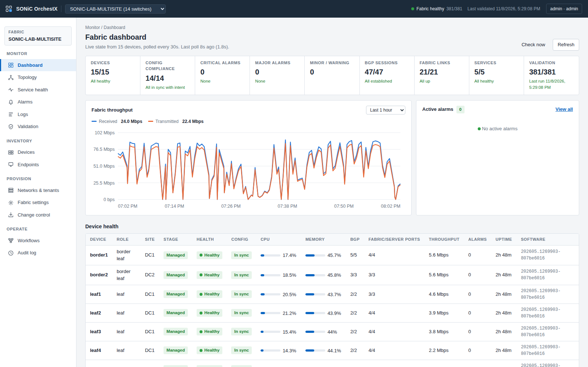
From intent to a verified fabric
One declarative model drives everything. Nothing reaches a switch before it passes validation, and nothing is called done before it is measured.
Fabric intent
Sites, switches, links, ASNs and address pools in one model. Overlapping subnets, reused ports, VNI/VLAN collisions and pools that clash with management are rejected up front.
Exact diff per switch
Running config is read from every switch and compared with the intent: CONFIG_DB changes as JSON Patch, routing changes as an FRR diff. Review before anything changes.
Transactional, per switch
Live changes through SONiC's generic config updater with a checkpoint per switch. Post-checks fail? The switch is rolled back automatically.
Prove it works
BGP and EVPN sessions, VNIs and L3VNI bindings, remote VTEPs, LLDP cabling against the design, and a host-to-host ping matrix that also proves what must stay blocked.
Drift, heal, history
Out-of-band changes show up as drift. Known data-plane faults are detected and repaired. Every deploy and intent edit is recorded with its diff and author.
API first
Everything in the UI is a REST call: services, plan, deploy, validate, upgrade, change log. Token auth, background jobs, OpenAPI docs.
Tenant services, the way operators ask for them
VRFs and networks are created in the UI or API and attached to switch ports. The controller works out where VRFs, VNIs, gateways and trunk members have to exist.
- L3 networks - distributed anycast gateway, symmetric IRB, stretched across sites
- L2-only networks - bridged VNIs with no gateway, e.g. storage or cluster heartbeat
- Multi-tenancy - one VRF per tenant with its own L3VNI; isolation is tested, not assumed
- Hypervisor trunks - tagged ports carrying routed and L2-only VLANs together (vMotion across sites)
- Firewall service - inserted on the border leaf for traffic between tenants and to the internet; stateful, default deny, policies such as "web to db on TCP 5432"
- External connectivity - per-tenant VRF-lite handoff on the border leaf with eBGP, source NAT to the internet
- Multi-site - border-to-border DCI with eBGP underlay and EVPN, VXLAN end to end
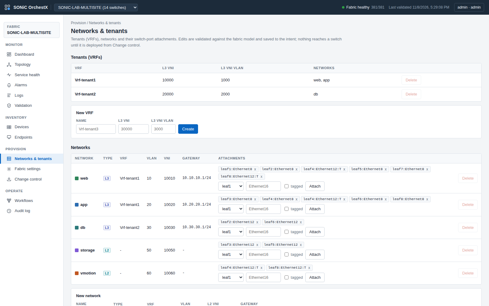
Monitoring and assurance
The controller keeps comparing the live fabric with the intent. When they disagree it raises an alarm, and when the fabric recovers the alarm clears itself.
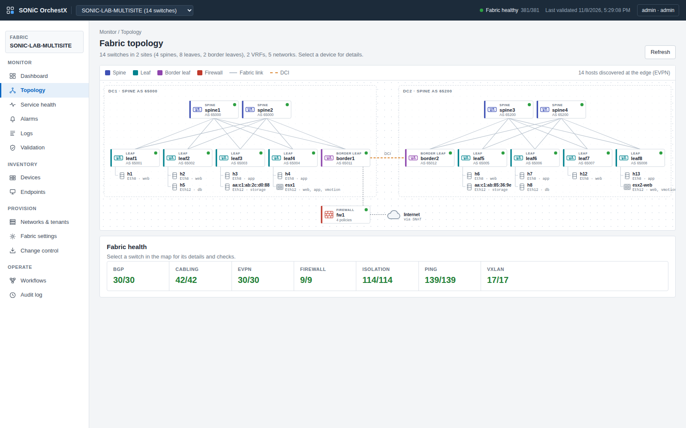
- Live state every 30 seconds - CPU, memory, interfaces and rates, BGP per VRF, VNIs, MACs, remote VTEPs, LLDP, containers; 24 hours of history
- Alarms that know the design - BGP sessions the intent expects, fabric links, cabling against LLDP, VNIs and L3VNI bindings, containers, thresholds, config drift
- Endpoint locator - every host with MAC, IP, network, switch and port, learned from EVPN
- Service health - each network across all switches that carry it; firewall sessions per policy
- Proven under failure - link down raised in 27 s and cleared 18 s after repair; a manual change outside the controller flagged as drift within a minute
Lab results, not slideware
Community SONiC 202605 virtual switches in a two-site topology, configured end to end by OrchestX. Two sites with two spines, four leaves and a border leaf each. Every number below comes from the controller's own validation run.
Validation run: 381 of 381 checks passed
Isolation checks are pings that must fail: flows the firewall policy does not allow, and L2-only networks to routed ones. Firewall checks open real TCP connections, allowed and denied.
| Service | What was tested | Result |
|---|---|---|
| L3 across sites | web host in DC1 to app host in DC2 and back (routed through the tenant VRF over the DCI) | 0% loss |
| L2-only stretched | storage hosts in DC1 and DC2 on one bridged VNI, no gateway | 0% loss |
| vMotion over DCI | two ESXi-style trunks in different sites on the L2-only vMotion VLAN | 0% loss |
| Firewall: allowed | web and app to the database on TCP 5432; app to db ping; app in DC1 to db in DC2 through the firewall | connects |
| Firewall: denied | web to db ping, any network to db on TCP 443, db to web (no policy in that direction) | blocked |
| Internet via firewall | tenant1 ICMP + HTTPS from both sites; db only HTTPS (patching), no ping; source NAT | as designed |
| Isolation | every flow the policies do not allow, and every L2-only to routed pair, must be unreachable | 114/114 blocked |
| Cabling | every link in the design matched against LLDP neighbours, both directions | 42/42 |
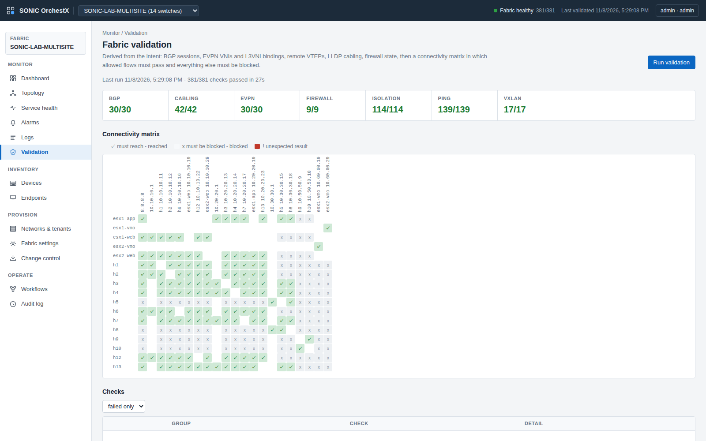
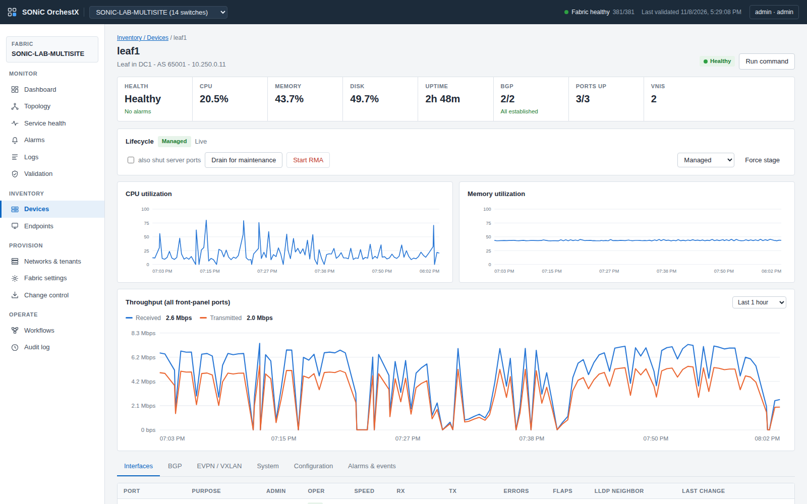
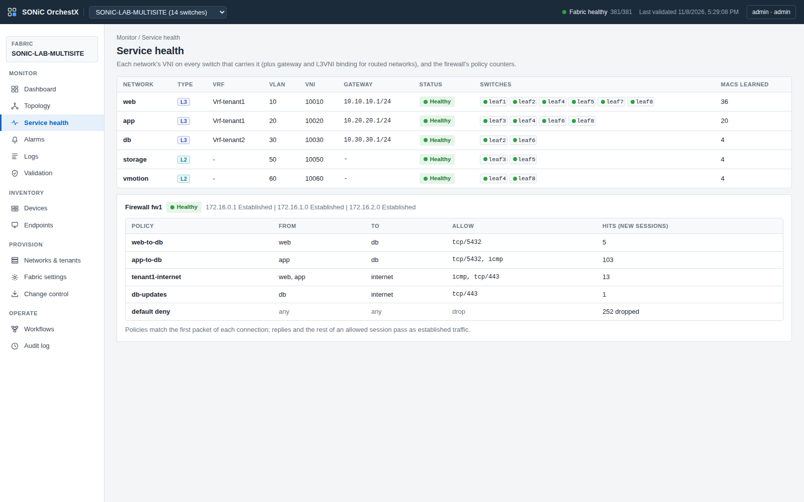
Built for day 2
Getting a fabric up once is the easy part. OrchestX is designed around safe, repeatable change and an honest view of the running network.
- Change control - per-switch plan of the exact change; the deploy is tied to the intent revision that was reviewed and refused if the intent changed since
- Automatic rollback - per-switch checkpoint; failed post-checks restore config and routing
- Config compliance - every switch continuously compared with the intent; an out-of-band change shows up as out of sync
- Device lifecycle - blueprint, staging, managed, maintenance and RMA stages; drain and promote run as checked, logged workflows. Draining a spine under live traffic: 0 of 1,400 packets lost
- Fabric settings - NTP, DNS, syslog, SNMP, AAA / TACACS+, login banner and time zone, applied fabric-wide and watched for drift
- Logs - syslog from every switch collected by the controller, searchable per switch and severity, with a live tail
- Backups and compare - snapshot before every change and on a schedule; compare any two of backup, running and intent; restore
- Access control and audit - viewer, operator and admin roles; read-only device CLI for operators; every action audited; secrets masked
- Multi-fabric - one controller, many fabrics, each strictly scoped; fabric creation and discovery of new switches by LLDP from Fabric Administration
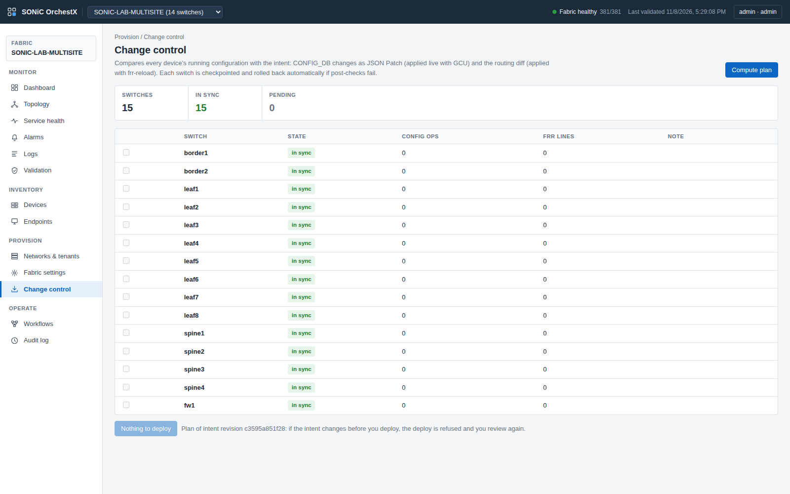
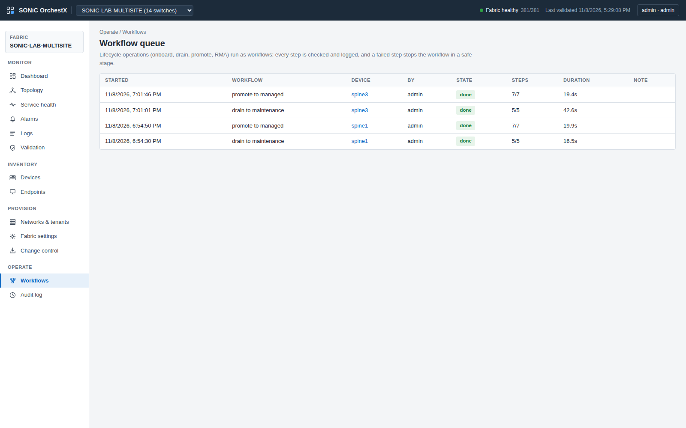
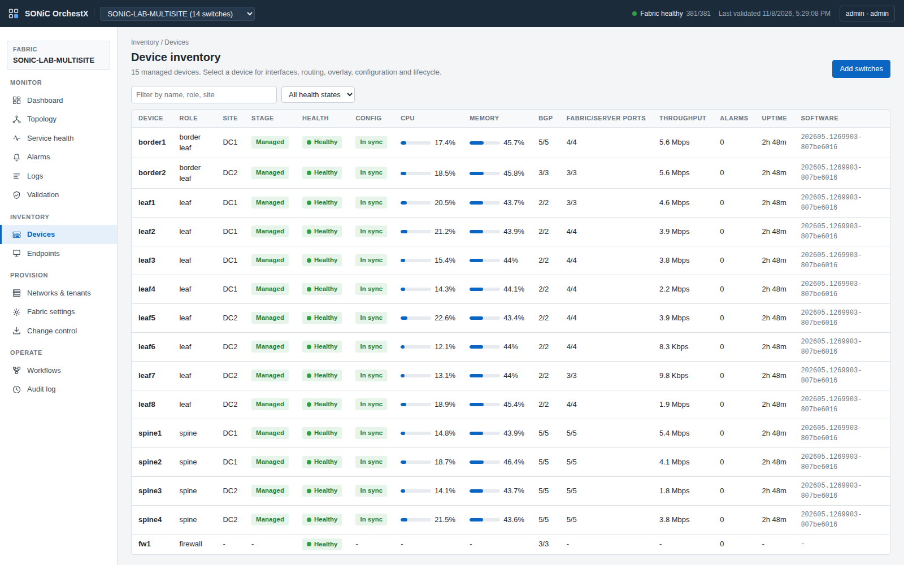
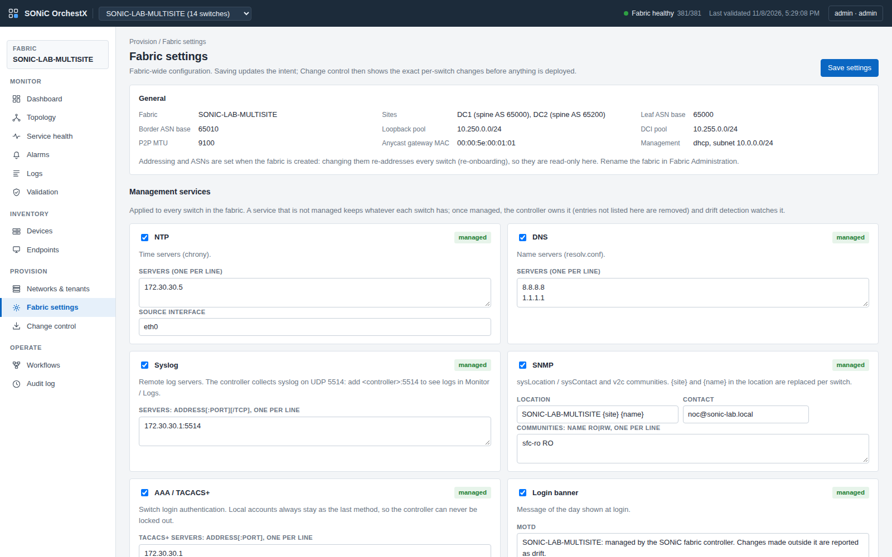
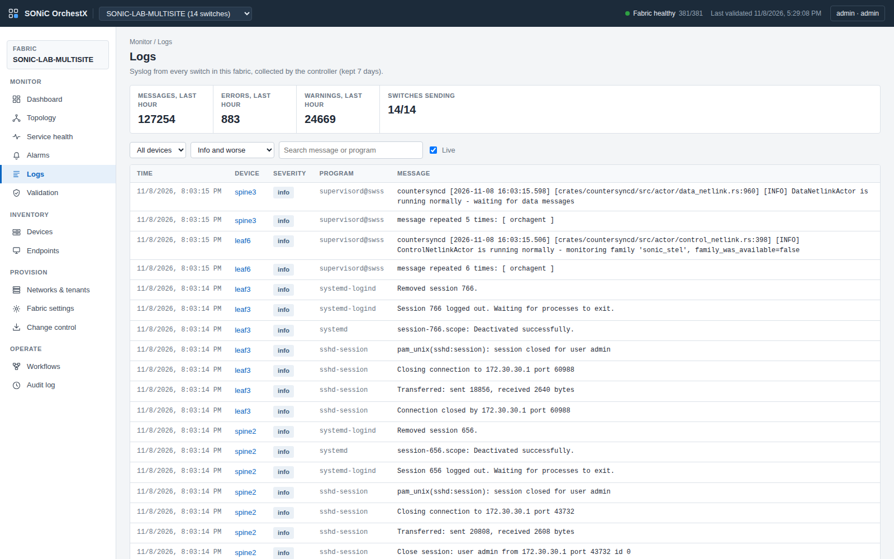
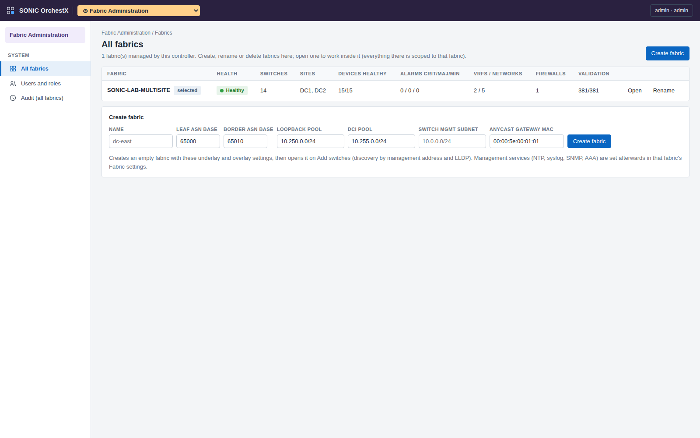
Engineering that holds up
Open networking means owning the details. Issues found in the lab are traced to the source and fixed there, not papered over.
Upstream routing fix carried
An FRR bug made a new VLAN take over a tenant's L3VNI, silently breaking inter-subnet routing. Traced to the upstream issue and its fix; our SONiC image build includes the patch, and the controller detects and repairs the condition on stock images.
Critical fixes backported
26 crash and correctness fixes for BGP, EVPN and zebra from FRR's stable branch, applied on top of SONiC's own patch set and verified to apply cleanly.
No false drift
Rendered configuration matches what FRR and SONiC actually keep, so "in sync" means in sync. Diffs are computed by FRR's own reload logic.
Capabilities
Every capability below is implemented and proven on the live two-site lab.
| Capability | Status |
|---|---|
| eBGP underlay, BGP EVPN overlay, symmetric IRB, anycast gateway | Fully Supported |
| Multi-site with border-to-border DCI | Fully Supported |
| L3 and L2-only networks, multi-tenant VRFs, hypervisor trunks | Fully Supported |
| Firewall service insertion (inter-tenant + internet, stateful policy, SNAT) | Fully Supported |
| External VRF-lite handoff per tenant | Fully Supported |
| Plan / diff, transactional deploy, rollback, drift detection | Fully Supported |
| Web UI and REST API | Fully Supported |
| Monitoring: dashboard, alarms, event log, 24 h history, endpoint locator, config compliance | Fully Supported |
| Device lifecycle: drain / promote / RMA workflows (drain under traffic, no loss) | Fully Supported |
| Fabric settings: NTP, DNS, syslog, SNMP, AAA / TACACS+, banner, time zone | Fully Supported |
| Syslog collection and log search | Fully Supported |
| Role-based access, audit, device CLI, configuration backups and compare | Fully Supported |
| Multi-fabric with Fabric Administration; switch discovery by LLDP | Fully Supported |